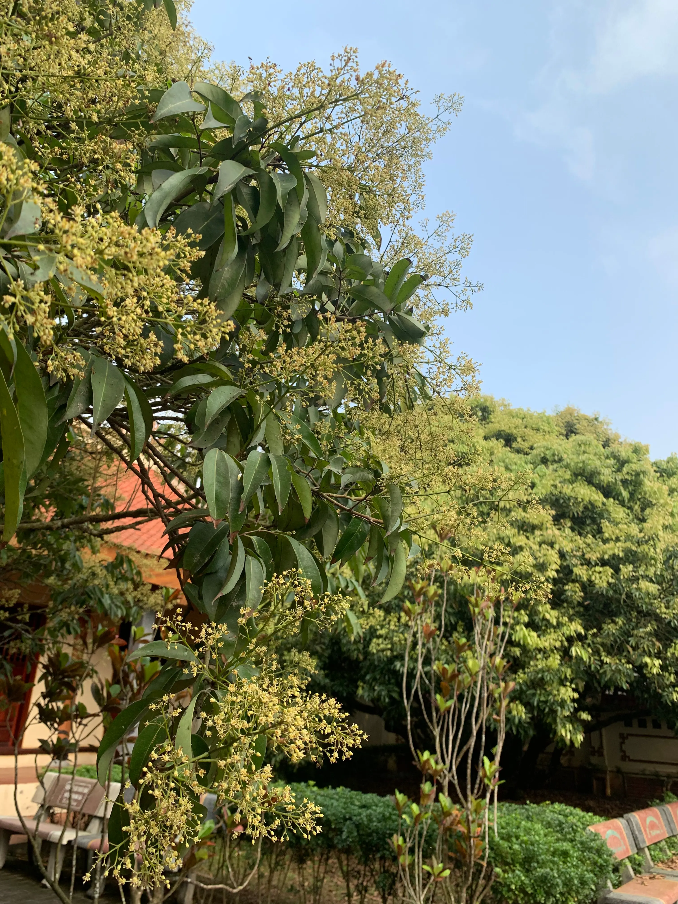
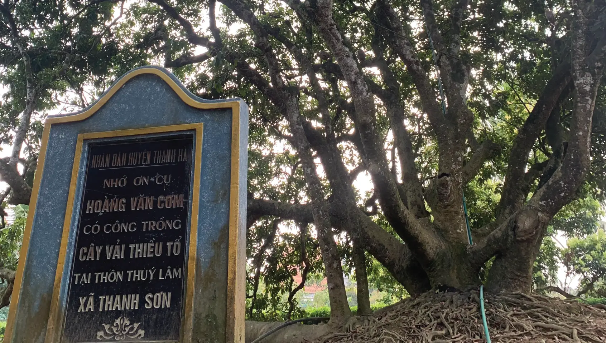
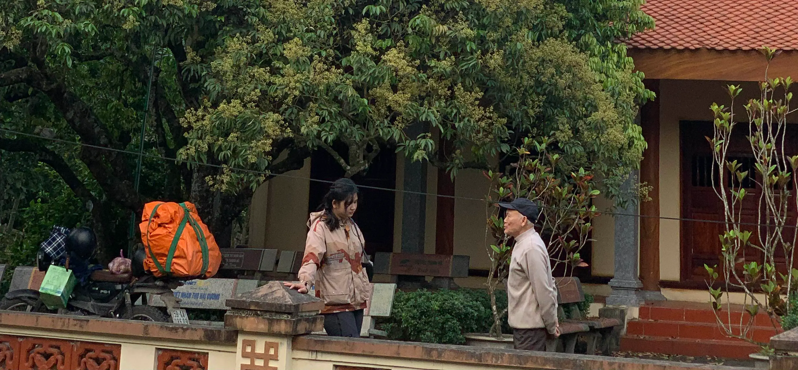
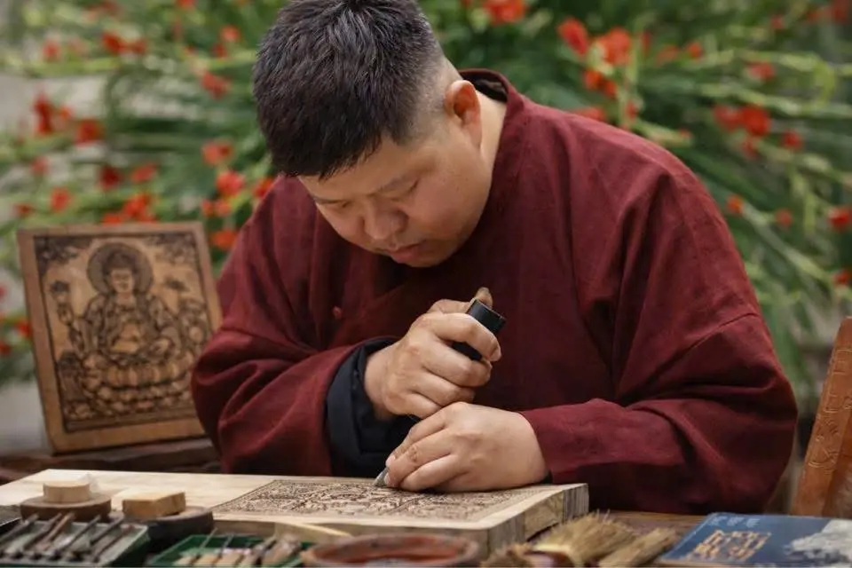

From Nam Định, we continued our slow journey toward Thăng Long. Along the way, Hải Ninh suddenly realized there was one place we should not miss: Thanh Hà, Hải Dương — the birthplace of Vietnamese lychee cultivation. So instead of heading to Hưng Yên first as we had originally planned, we turned eastward instead.
Hải Dương left me with a strangely familiar feeling. I do not know if others would feel the same, but for me — after personally driving through so many regions across Vietnam — the road into Thanh Hà reminded me more of the Mekong Delta than anywhere else in the North. There were banana groves leaning close to the water, wide open fields, and dense networks of rivers threading quietly between small villages. It was difficult to put that feeling into words.
And perhaps it was precisely there that I began to better understand why the Mongol invasions once struggled so deeply when advancing into Đại Việt during the Trần dynasty. Landscapes like this — dense with waterways, branching rivers, and villages woven between them — already formed natural defensive landscapes. Hải Dương and Hưng Yên once served as satellite regions protecting the imperial capital of Thăng Long.
"The final stretches of the Red River system before reaching the sea also passed through this land."
Hoàng Đại — Thiện KiếnDuring the Trần dynasty, the region was known first as lộ Hồng, then lộ Hải Đông, before later becoming trấn Hải Đông under Emperor Trần Thuận Tông. The history of this land was already written into the waterways before any road map existed.
Chapter I · The Ancestral Lychee Tree
The moment we arrived in Thanh Hà, we began to notice the first lychee trees flowering. But the deeper we went, the clearer the feeling became — this entire region seemed to live alongside the lychee tree. Lychee trees were everywhere. Behind the houses. In front yards. Along the roadsides. At certain stretches, passing beneath the vast overlapping canopies, I felt as though we were moving through a forest.
Today, thanks to smartphones and digital maps, finding the ancestral lychee tree is fairly easy. But there is also a much older way — simply asking the locals, because everyone here knows the road leading to it.

Cây Vải Tổ & Cụ Hoàng Văn Cơm
My first impression upon seeing the ancestral lychee tree was not its size, but its shape. It did not rise straight upward the way I had imagined. From the very base, the trunk split into many massive branches, spreading outward into a giant canopy that seemed to embrace the land around it.
Beside the tree stood a stone stele commemorating the man who first brought this lychee variety to Thanh Hà — Hoàng Văn Cơm.
The ancestral lychee tree does not stand inside a closed tourist site or behind any special conservation fence. It exists within a deeply ordinary, public space. People pass by it every day as though it had always belonged to this land.
Hải Ninh and I stood quietly beneath its canopy for a long while before stepping into the small shrine beside it — the shrine dedicated to Hoàng Văn Cơm.
"In an earlier essay, I mentioned that both Hải Ninh and I share the surname Hoàng. From Nam Định onward, encounters connected to that surname kept appearing in ways difficult to explain."
And now, here at the birthplace of Vietnam's most famous lychee variety, the man who began an entire region's centuries-old growing tradition… was once again a man bearing the surname Hoàng.

Người Giữ Miếu — The Keeper of the Shrine
The small shrine was left unlocked. There were no caretakers, no ticket booth. We entered with the same feeling people often carry when standing before a living heritage — gratitude.
We assumed there would no longer be anyone around to speak with, as it was already well past noon by the time we arrived. But just as we stepped out of the shrine, we encountered a small elderly man with silver hair, still remarkably agile, pausing on his bicycle to look at us.
Only after speaking with him did we realize he was a descendant of Hoàng Văn Cơm — and also the caretaker of the shrine itself.
Beneath the ancestral lychee tree, he went on telling stories about lychee cultivation in Thanh Hà: how varieties are selected, how seasons are judged, the years of poor harvests, the years of abundance, and how the lychee variety from this very place gradually spread to many other regions.
"There is a reason people call this the ancestral lychee tree."
Vải Thanh Hà
Today, because of media attention and large-scale production, most people immediately think of Bắc Giang when lychee is mentioned. Yet the original lychee variety was first carried outward from this very tree.
Over time, to suit larger markets and higher yields, many newer varieties were developed. But for those who have spent their lives alongside the lychee trees of Thanh Hà, many still believe the most original flavour remains here.
And perhaps that was exactly why we chose to make this detour before entering Thăng Long.

Những Người Nuôi Ong Du Mục — The Nomadic Beekeepers
Leaving Thanh Hà, we encountered migratory beekeepers along the roadside. They arranged rows of beehives across wide open yards, traveling seasonally from one flowering region to another. During longan season, they followed the longan blossoms. During coffee season, they followed the coffee flowers. And at the beginning of lychee blossom season in Hải Dương, they brought their bees here.
I have always found something beautiful about the life of migratory beekeepers. They do not belong to a single fixed piece of land, but instead live alongside flowering seasons and endless journeys. They read weather patterns, flowering cycles, and the first moments trees begin to bloom — the way ancient herders once read grasslands.
And the bees — those small yet tireless companions of the trade — quietly create honeys carrying the distinct flavours of each flowering region. Perhaps that is why coffee blossom honey, longan blossom honey, and lychee blossom honey all taste so remarkably different, despite all simply being honey.
Chapter II · The Woodblock Carving Village
While in Hải Dương, Hải Ninh and I also made sure to visit my friend Công Đạt — a young man who carries an almost absolute pride in his village's traditional craft: woodblock carving in Thanh Liễu.
Without looking carefully into history, many people today might never realize that part of the visual record of Vietnamese life in the late nineteenth and early twentieth centuries survives thanks to the artisans of this village.
Technique du peuple Annamite — Henri Oger
This came through the work Technique du peuple Annamite — by Henri Oger, a French scholar who personally financed painters and woodblock artisans to document the daily life, beliefs, tools, and customs of Vietnamese society at the time.
The two woodblock artisans who participated in that project both came from Thanh Liễu village. They even discreetly left the name of their village on several woodblocks — a small silent mark hidden within history. Because of that project, we are now able to see Vietnamese society from more than a century ago with extraordinary vividness and intimacy.

In Thanh Liễu, Công Đạt showed us old carving tools and techniques passed down through generations. Some details, even today with modern machinery, still cannot fully recreate the methods used by earlier craftsmen. More unfortunate still, some of those techniques have already disappeared.
Yet what stayed with me most was not the woodblocks themselves. It was the feeling of watching a young man like Công Đạt speak about his village's craft with eyes carrying almost no trace of doubt.
"In an era where many traditional craft villages survive only as names inside tourism brochures, there are still people who choose to remain and protect the memory of their homeland."
From the lychee groves of Thanh Hà to the carving tools of Thanh Liễu, Hải Dương held a kind of memory that does not announce itself. It simply continues — in the shape of a tree, in the grain of a woodblock, in the way an old man pauses his bicycle when he sees someone who has come to look.
The road from here would take us into Hưng Yên — and into a different kind of continuity altogether.